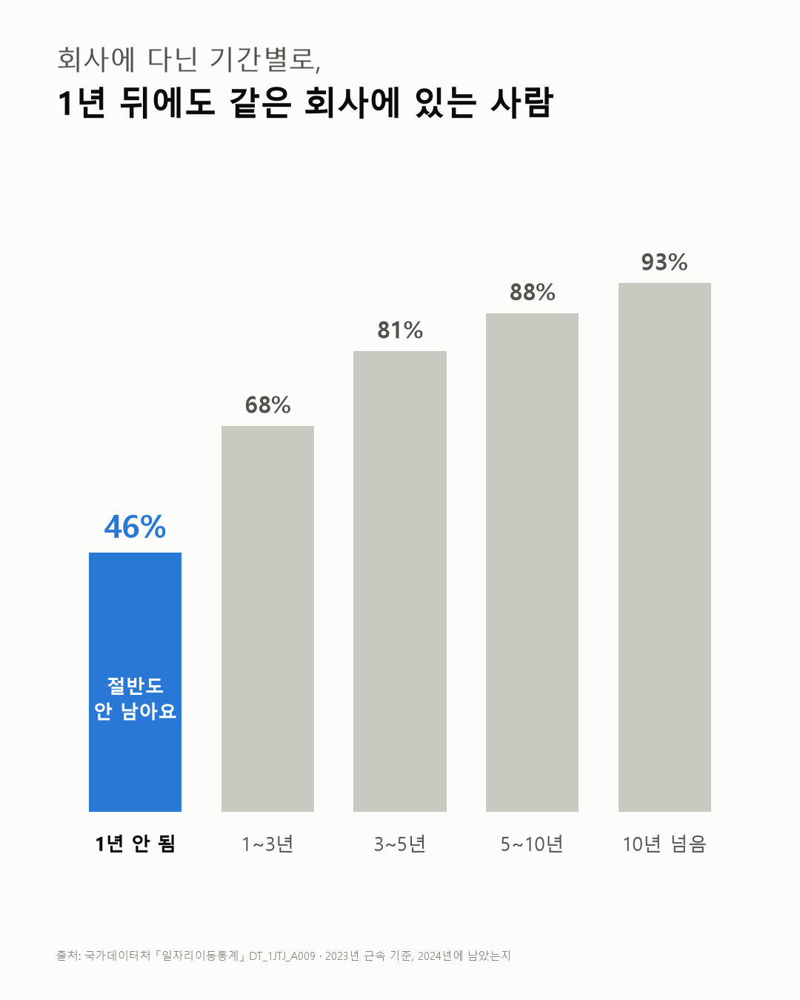
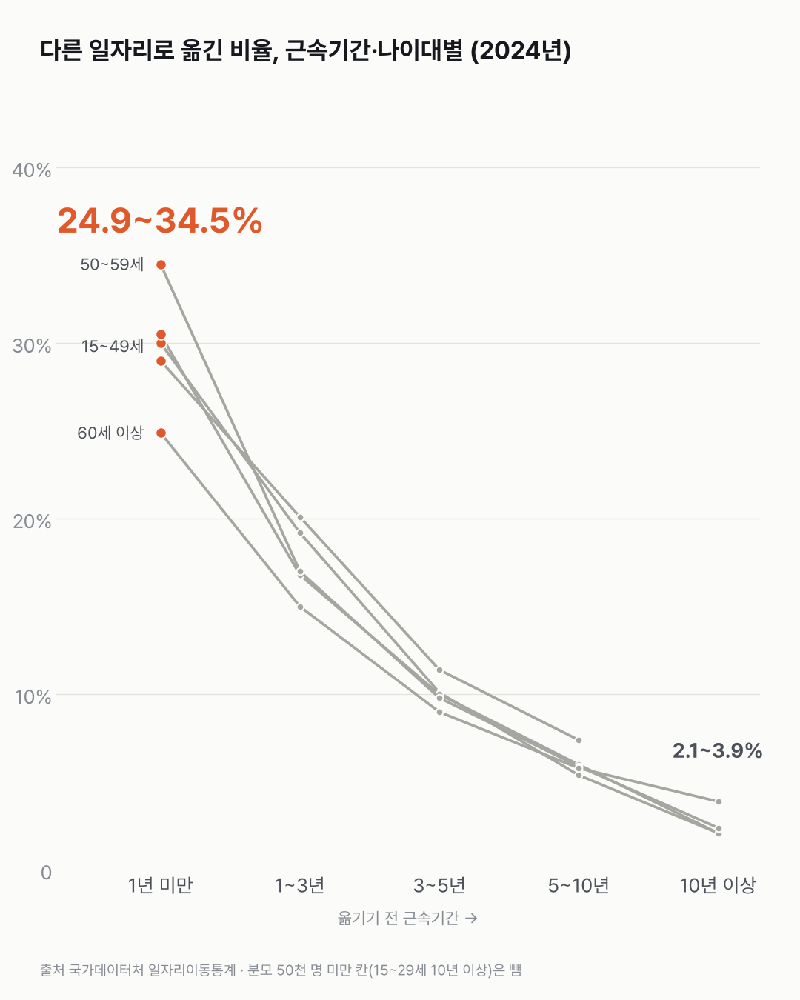

들어간 지 1년 안 된 회사, 1년 뒤엔 절반도 안 남아요
회사를 옮기는 일은 대부분 들어간 지 얼마 안 됐을 때 일어나요. 8년 내내 같은 모양이었어요.

- 다닌 지 1년이 안 된 회사에 1년 뒤에도 남아 있는 사람은 45.8%예요.
- 29.4%는 다른 일자리로 옮겼고, 24.8%는 다음 해 일자리 기록이 아예 없었어요.
- 오래 다닐수록 남아요. 1~3년이면 68.1%, 10년이 넘으면 93.3%가 그대로 있어요.
2017년 통계로 거슬러 가 보면, 들어간 지 얼마 안 된 회사에 이듬해에도 남은 사람은 열에 넷 정도였어요. 정확히는 42.1%예요. 2017년부터 2024년까지 이 비율은 41.9%에서 45.8% 사이를 오갔어요. 가장 최근인 2023년에 회사에 다닌 지 1년이 안 됐던 674만 명 가운데선 45.8%가 남아, 8년 중 가장 높았어요. 29.4%는 다른 일자리로 옮겼고, 24.8%는 다음 해 일자리 기록이 없었어요.
다닌 기간을 늘려 가며 보니 생각보다 차이가 컸어요. 1~3년이면 68.1%, 3~5년이면 81.3%, 10년이 넘으면 93.3%가 그대로 있어요. 다른 데로 옮기는 비율은 29.4%에서 2.7%까지 내려가요.
그럼 나이 때문일까요? 오래 다닌 사람은 나이도 많은 경우가 많으니까요. 나이대별로 따로 나눠 봤는데, 15~29세부터 60세 이상까지 모두 1년 안 됐을 때 가장 많이 옮겼어요. 그중 50대가 34.5%로 가장 높았어요.

해가 바뀌어도 모양은 그대로였어요. 2017년부터 2024년까지 1년 안 된 사람이 다른 데로 옮기는 비율은 29~31% 사이에서만 움직였어요.
다음 해 기록이 사라진 24.8%는 어디로 갔을까요. 실업인지 학업인지 은퇴인지, 이 표는 한 칸으로만 묶어 두었어요.
이 숫자는 어디서 왔나요
출처
기준일 2017~2024년. 해마다 전년도 일자리와 비교한 결과예요. 본문 숫자는 2023→2024년이에요.
국가데이터처일자리이동통계
- 연령별·근속기간별(변동전) 일자리 이동KOSIS DT_1JTJ_A009원본 보기
근속기간별로 1년 뒤 남은 사람·옮긴 사람·기록이 없어진 사람
어떻게 셌나요
- 설문이 아니에요. 행정 기록에 일자리가 등록된 사람을 세는 통계예요.
- 어느 해에 일하던 사람이 1년 뒤 어떻게 됐는지를 셋으로 나눠요. 유지자는 같은 직장에 그대로 있는 사람, 이동자는 다른 일자리로 옮긴 사람, 미등록자는 다음 해 일자리 기록이 없는 사람이에요.
- 남은 비율은 유지자를 세 무리를 합한 수로 나눈 값이에요. 옮긴 비율, 기록이 없어진 비율도 같은 수로 나눴어요.
- 근속기간은 옮기기 전 해 기준이고, 나이는 다음 해 기준이에요.
- 미등록에는 실업, 구직, 은퇴, 학업 등이 한데 묶여 있어요.
한계 6가지
이 데이터로 말할 수 없는 것
- 옮긴 이유는 몰라요. 스스로 옮긴 경우와 계약 만료, 해고가 섞여 있어요. 근속 1년 미만에는 계약직·단기 일자리가 많을 수 있지만, 이 표로는 확인이 안 돼요.
- 기록이 없어진 사람이 실업인지, 휴직·학업·은퇴·해외 취업인지 구분하지 않아요.
- 오래 다녀서 덜 옮긴다는 뜻은 아니에요. 옮길 생각이 없는 사람이 오래 남아 근속이 길어졌을 수도 있어요.
- 15~29세 근속 10년 이상은 3천 명뿐이라 차트에서 뺐어요.
- 천 명 단위라 작은 칸은 반올림 영향이 커요.
- 이직하면 월급이 어떻게 됐는지는 이직과 임금 글에서 다뤘어요.
새 글 나오면 받아 보기
피드 리더 앱에 이 사이트 주소를 한 번 넣어 두면, 새 글이 올라올 때 앱에 떠요. 가입이나 메일 주소는 필요 없어요.
받는 법 보기
- 피드 리더 앱을 하나 골라요. 새 글을 모아 보여 주는 앱이에요. 예를 들면 Feedly나 Inoreader가 있어요. 둘 다 무료고 웹·휴대폰에서 써요.
- 앱에서 '구독 추가'(+)를 누르고 아래 주소를 붙여 넣어요.
- 끝이에요. 새 글이 올라오면 앱 목록에 떠요.
https://protofu.github.io/opendata-insight/feed.xmlFeedly를 쓴다면 여기를 눌러 바로 추가할 수도 있어요.